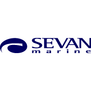

Har du lyst til å bidra i varierte og spennende prosjekter sammen med kompetente kolleger i et godt sosialt og faglig miljø?
31.10.2023
Stavanger/Oslo
Sommerstudent
Vi søker sommerstudent for sommeren 2024
Vi søker en sommerstudent som ønsker å videreutvikle seg innenfor ulike typer arbeid innen hydrodynamikk, marine operasjoner og/eller struktur.
Gjennom en sommerjobb hos Global Maritime får du innblikk i og muligheten til å aktivt delta i et eller flere av våre pågående prosjekter.
Ønskede kvalifikasjoner og egenskaper:

Western Bulk is seeking curious and highly dedicated trainees for Chartering roles in our Commercial Teams
21.10.2023
Oslo
Chartering Trainees
Western Bulk (WB) is an asset-light dry bulk operator and freight trader, operating a fleet of about 100 -150 Panamax, Supramax and Handysize vessels. The company combines highly commercial trading skills with technology, advanced analytics and risk management to succeed in an extremely competitive and global shipping market.
WB seeks to offer flexible, high-quality ocean freight services to its customers, leveraging on its global trading pattern, relationships and operational expertise. Through its constant presence in the various regional and local freight markets, WB gains valuable market intelligence that it uses to take positions in the market – trying to identify and benefit from short term price variations, trend breaks and arbitrage opportunities. Moreover, value is created by constantly seeking to optimise the scheduling of vessels and cargoes, reducing ballast time and finding ways to operate voyages as efficiently as possible.
Each of WB's nine Commercial Teams operate as decentralized profit centres, using ships, cargoes and derivatives for directional play and arbitrage in the market. Risk management is a central part of WB's trading model, and the company also invests heavily in the use of technology and advanced analytics for decision support and market forecasting.
Western Bulk is headquartered in Oslo, and has offices in Singapore, Dubai, Seattle, Santiago, Casablanca and Copenhagen.
Chartering Trainees
Western Bulk is seeking curious and highly dedicated trainees for Chartering roles in our Commercial Teams.
In addition to seeking candidates who are graduates from Bachelor’s degree or higher level of education, we also seek candidates with a proven track record within sales or trading that would like to work within dry bulk shipping.
Trainees in Western Bulk are given challenges and responsibilities from day one. The trainees will start out in one of our nine Commercial Teams learning vessel operations, and after about one year, trainees start to specialise in chartering.
The Chartering role will involve the following responsibilities:

This is your opportunity to get hands-on experience in one of the world’s leading maritime organisations
29.10.2023
Oslo
Digital Summer Intern
About BW LNG
BW LNG is a leading developer, owner and operator of floating gas infrastructure solutions. Our Shipping unit brings LNG to where it is needed, and our Gas Solutions unit develops, owns and operates floating gas infrastructure.
A global company with over four decades of experience in gas solutions, with more than 30 LNG carriers and Floating Storage and Regasification Units, we strive to be a long-term partner for sustainable growth and competitive solutions towards a low-carbon society. BW LNG has offices in Oslo, Singapore, Houston, Rio, Beijing, Mumbai, and Manila.
BW LNG is an affiliate of BW Group, a leading global maritime company involved in shipping, floating infrastructure, deepwater oil & gas production, and new sustainable technologies. Founded in 1955 by Sir YK Pao, BW controls a fleet of over 490 vessels transporting oil, gas and dry commodities, with its 200 LNG and LPG ships constituting the largest gas fleet in the world. In the renewables space, the group has investments in solar, wind, batteries, biofuels and water treatment.
Are you ready to make an impact?
What drives us is our mission to deliver energy for the world today, and to find solutions for tomorrow. If you want to make lives better around the world by providing access to energy, while working on sustainability and decarbonisation, we’d like to hear from you. Working at BW you will feel the pulse of the world each day. If something happens in the world, we feel it, and you can play your part by anticipating and responding to it. Our high-performing teams are drawn to BW by the global nature of our work and the satisfaction of working with collaborative people who inspire each other to deliver exceptional results.
JOIN US FOR THE FUTURE
We are currently seeking:
Digital Summer Intern
In order to support our vision to be Best on Water, BW LNG is looking for a highly motivated summer intern to work with our various in-house teams on digital initiatives. Actual tasks will depend on qualifications and departmental needs at the time.
This is your opportunity to get hands-on experience in one of the world’s leading maritime organisations.
Potential responsibilities:
This is your opportunity to get hands-on experience in one of the world’s leading maritime organisations
29.10.2023
Oslo
Technical Summer Intern
About BW LNG
BW LNG is a leading developer, owner and operator of floating gas infrastructure solutions. Our Shipping unit brings LNG to where it is needed, and our Gas Solutions unit develops, owns and operates floating gas infrastructure.
A global company with over four decades of experience in gas solutions, with more than 30 LNG carriers and Floating Storage and Regasification Units, we strive to be a long-term partner for sustainable growth and competitive solutions towards a low-carbon society. BW LNG has offices in Oslo, Singapore, Houston, Rio, Beijing, Mumbai, and Manila.
BW LNG is an affiliate of BW Group, a leading global maritime company involved in shipping, floating infrastructure, deepwater oil & gas production, and new sustainable technologies. Founded in 1955 by Sir YK Pao, BW controls a fleet of over 490 vessels transporting oil, gas and dry commodities, with its 200 LNG and LPG ships constituting the largest gas fleet in the world. In the renewables space, the group has investments in solar, wind, batteries, biofuels and water treatment.
Are you ready to make an impact?
What drives us is our mission to deliver energy for the world today, and to find solutions for tomorrow. If you want to make lives better around the world by providing access to energy, while working on sustainability and decarbonisation, we’d like to hear from you. Working at BW you will feel the pulse of the world each day. If something happens in the world, we feel it, and you can play your part by anticipating and responding to it. Our high-performing teams are drawn to BW by the global nature of our work and the satisfaction of working with collaborative people who inspire each other to deliver exceptional results.
JOIN US FOR THE FUTURE
We are currently seeking:
Technical Summer Intern
In order to support our vision to be Best on Water, BW is looking for a highly motivated summer intern to support our Technical team. BW LNG currently manages 23 LNG carries and 5 FSRUs from our Oslo office. Our Technical team consist of superintendents and technical support functions. Actual tasks will depend on qualifications and departmental needs at the time.
This is your opportunity to get hands-on experience in one of the world’s leading maritime organisations.
Potential Responsibilities:
To support Technical Superintendents with:
Vil du være med å løse framtidens utfordringer neste sommer? Nå kan du søke sommerjobb for 2024 i Multiconsult
16.10.2023
Hele landet
Sommerjobb
I Multiconsult har vi som mål å hele tiden gjøre samfunnet og omgivelsene våre bedre – og mer rustet for å løse fremtidens behov. Derfor utfordrer vi grensene for hva som er og bør være, gjennom å hele tiden finne bedre løsninger for samfunnet, både i dag og i morgen.
Måten vi løser dette på, er å tenke stort. Med en sommerjobb i Multiconsult får du også muligheten til akkurat det – lære av det som var, og utfordre det som er.
Hva kan du forvente av en sommerjobb eller et sommerprogram i Multiconsult?
Målet med våre sommerjobber er å gjøre deg som student best mulig rustet for arbeidslivet og spennende karrieremuligheter hos oss. For at du skal få et positivt og riktig bilde av hvordan det er å jobbe i Multiconsult, legger vi hvert år ned stor innsats i å tilby spennende, utfordrende og relevante oppgaver i våre sommerengasjement.
Sommerjobben i Multiconsult er en unik mulighet til å bli bedre kjent med Multiconsult som arbeidsgiver, og hverdagen som rådgivende ingeniør. Her får du muligheten til å ta del i pågående oppdrag og fagrelevante oppgaver som forbereder deg til arbeidslivet. Dette kan innebærer alt fra prosjektering, analyse, tegninger og beregninger til befaring på byggeplass og kundemøter. Felles for alle oppgaver er at du vil dra nytte av kunnskapen til våre erfarne medarbeidere, samtidig som du vil få muligheten til å komme med nye perspektiver og ideer.
Gjennom sommeren vil det også bli arrangert sosiale aktiviteter der du får muligheten til å bli bedre kjent med andre sommerstudenter og kollegaene i avdelingen du tilhører.
Hva forventer vi av deg som sommerstudent?
Vi forventer ikke at du skal kunne alt – vi er først og fremst opptatt av ditt potensiale. For at vi som selskap skal kunne utvikle oss er vi avhengig av nye perspektiver, derfor trenger vi deg som er faglig engasjert, nysgjerrig og som tør å utfordre etablerte standarder.
I Multiconsult verdsetter vi relasjonskompetanse på høyde med faglig kompetanse og tror at fremtidens rådgiver er like dyktig på kommunikasjon og samarbeid som på fag.
Hvem kan søke på sommerjobb i Multiconsult?
Vi søker etter deg som er under utdanning på fagskole, høyskole eller universitet, både bachelor- og masterstudenter er av interesse. Du studerer innenfor et fagområde som er relevant for sommerjobben du søker på, og kunne tenke deg en karriere innenfor rådgiverbransjen.
Vi søker fortrinnsvis etter deg som skal starte på ditt siste år av utdanningen.

The energy transition is an incredible journey. We are looking for students with the drive and passion to make the journey possible
20.10.2023
Stavanger
Intern
This is a great opportunity to come and work with us; learn about what we do and what it means to work for Subsea7.
You will follow an engineer’s daily work where you will be assigned with both interesting and challenging work tasks.
We will give you the chance to network with experts and to develop your technical and non-technical skills.
Minimum requirements:
3rd or 4th year student, typically in one of the following engineering disciplines:
Mechanical, Civil, Geotechnics, Structural, Marine/Naval Technology, Material Technology, Power distribution, Offshore Technology, Energy and Environmental Engineering or Applied Physics and Mathematics.
Good verbal and written English.
Work period:
Mid-June to mid/end of August. We will prioritize students that can work through the whole period.
Please upload temporary transcript or other document describing subjects and grades achieved to this point.

Curious, creative and up for a challenge?
26.10.2023
Oslo/Arendal/Bergen
Summer Intern
Sevan is a technology-driven, design and engineering company with focus on our unique cylindrical hull design. Sevan has been an innovator within floating offshore structures for 20 years, serving the oil & gas sector. We have now entered the green energy sector and are heavily involved in concept and technology development. We are also developing systems for integrity monitoring and increased engineering efficiency.
We are looking for summer interns with backgrounds in marine technology. Specialization within marine hydrodynamics, marine structures or marine cybernetics and competence within programming are preferred qualifications.
We seek to hire 3-4 summer interns, who have completed their 3rd or 4th year. You will either collaborate on one task or work on separate tasks, depending on the skills and interests of the intern. Projects and tasks from previous years are listed below:
2023: Use of physics-informed neural networks for calibration of numerical models to model tests and training of text-to-image diffusion models on Sevan units. Basis for master thesis
2022: Prototyping of generic data model application for storage, provision and version control of data models, primarily for hydrodynamic and mooring analyses
2021: Development of calculation tool for assessment of the structural response of dropped objects. Basis for master thesis
2020: Development and production deployment of model test database. The database is now a key component in our daily operations.
2019: Prototyping of model test database for easy storage and provision of model test data.
2017: Parameter study and optimization on Sevan SWACH hull (our wind turbine foundation) with respect to hydrodynamic performance.
The tasks for 2024 will be centered around:
Curious, creative and up for a challenge?
26.10.2023
Oslo/Arendal/Bergen
Graduate
Sevan is a technology-driven, design and engineering company with focus on our unique cylindrical hull design. Sevan has been an innovator within floating offshore structures for 20 years, serving the oil & gas sector. We have now entered the green energy sector and are heavily involved in concept and technology development. We are also developing systems for integrity monitoring and increased engineering efficiency.
We are looking for graduate engineers (MSc) with backgrounds in or interest for marine technology. Specialization within marine hydrodynamics, marine structures or marine cybernetics and competence within programming are preferred qualifications.
Typical work tasks are design and analysis of floating structures, concept development – where the focus currently is on floating wind turbines, floating substations, green power hubs and carbon capture and storage, as well as other floating structures. In addition, development and maintenance of software to support such analyses are also relevant tasks.
We offer:
Have you pursued a Marine Technician, Marine Engineer or Naval Architect bachelor’s/master’s and still are unsure what to do with it? OSM Thome is looking for a trainee planned start-up in August 2024!
ASAP
Arendal/Bergen
Trainee
OSM Thome is a leading ship management and maritime service provider with more than 22 locations worldwide. We provide ship management, crew management and many other services.
We are looking at candidates for the trainee position in Europe, with the possibility of a potential development into a position as Vessel Manager, Project Engineer, Marine Superintendent or other position in our ship and offshore management company - pending background and development.
The trainee position looks for a young and enthusiastic individual with relevant experience for further growth in our company. We will provide a set of challenging tasks and a wide range of projects and responsibilities that guarantee your personal growth and development for the right candidate.
Duties and Responsibilities:

Er du et av våre sommertalenter i 2024?
22.10.2023
Oslo/Stavanger/Bryne/Stord/Bergen
Summer Intern
Ta ditt neste karrieresteg i ABB ved å bli en del av det globale teamet som bidrar til samfunnsmessige og industrielle endringer mot en mer produktiv og bærekraftig fremtid.
I ABB har vi en klar målsetning om å være ledende innen alle aspekter av begrepene mangfold og inkludering som blant annet omfatter kjønn, legning, etnisitet og alder. Sammen har vi kommet godt i gang på en reise hvor vi ønsker at hver og en av oss tar imot og bidrar til mangfold og ulikhet.
Bli med ABB og jobb i et team som er dedikert til å skape en fremtid hvor innovative, digitale teknologier gir bedre tilgang til renere energi.
ABB er et ledende globalt teknologiselskap som deltar aktivt i omstillingen av samfunnet og industrien for å oppnå en mer produktiv og bærekraftig fremtid. Gjennom banebrytende ingeniørkunst, der programvare koples sammen med produkter innen elektrifisering, robotisering, automatisering, motorer og omformere, skaper ABB løsninger som løfter teknologiens muligheter til nye høyder. ABBs fremgang bygger på mer enn 130 års teknologisk lederskap og drives fremover av rundt 110 000 talentfulle medarbeidere i over 100 land.
Synes du teknologi og energi er spennende, og er motivert for å bruke dine egenskaper og ferdigheter til å fremme den fjerde industrielle revolusjon gjennom å skape en bærekraftig fremtid? Liker du tanken på å ta del i vårt globale nettverk hvor du kan samarbeide og være del av våre ledende fagmiljøer og team? Ja, da vil vi svært gjerne høre fra deg.
Er du et av våre sommertalenter i 2024?
Som intern hos oss får du tildelt et prosjekt som strekker seg over en periode på 6-10 uker. I løpet av denne tiden får du muligheten til å bli kjent med ABB, utfordre deg selv, bygge nettverk, tilegne deg relevant arbeidserfaring og være med på mye gøy. Du vil være lokalisert på et av våre kontorer, det være seg i Oslo, Bryne, Stord, Stavanger eller Bergen.
Personlig vekst og utvikling er like viktig for oss som for deg. Du vil bli en del av en uformell kultur der det å levere kvalitet er satt øverst. Hos oss får du kollegaer som er engasjerte og som etterlever våre verdier i det daglige. Vi har fleksibel arbeidstid, og tilrettelegger for hjemmekontor.
Hos oss vil vi få muligheten til å:
Er du nyutdannet og ønsker en kickstart på karrieren i et av verdens mest innovative selskaper?
15.10.2023
Alle kontorer i Norge
Trainee
Ta ditt neste karrieresteg i ABB ved å bli en del av det globale teamet som bidrar til samfunnsmessige og industrielle endringer mot en mer produktiv og bærekraftig fremtid.
I ABB har vi en klar målsetning om å være ledende innen alle aspekter av begrepene mangfold og inkludering som blant annet omfatter kjønn, legning, etnisitet og alder. Sammen har vi kommet godt i gang på en reise hvor vi ønsker at hver og en av oss tar imot og bidrar til mangfold og ulikhet.
Er du nyutdannet og ønsker en kickstart på karrieren din, i et av verdens mest innovative selskaper?
Ønsker du å bidra til et grønnere og mer bærekraftig samfunn og samtidig være med på å bygge den digitale hverdagen? Da bør du lese videre!
Gjennom ABB sitt traineeprogram tar du del i en global organisasjon i kontinuerlig utvikling, drevet av noen av verdens ledende eksperter, innen sine fagområder. Her får du en grundig innføring i ABB sine ulike forretningsområder over en periode på to år. Du vil selv være med på å påvirke både retning og innhold i programmet, og du får også mulighet til å bygge nettverk over hele verden. Gjennom din tid som Trainee, vil du legge et godt fundament for en fremtidig nøkkelrolle i ABB. Du vil også få et bredt innsyn i forskjellige avdelinger og divisjoner, noe som kan hjelpe deg med å utvikle en helhetlig forståelse av ABB.
Hva innebærer rollen som Trainee i ABB?
En Trainee i ABB vil ha fire perioder på seks måneder i løpet av to år. Du vil kunne jobbe i fire ulike forretningsområder og avdelinger. Du vil selv kunne påvirke valg av avdeling, egen utvikling og videre karriere. Traineene i ABB jobber med arbeidsoppgaver knyttet til ulike prosjektfaser og områder av ABB sin virksomhet. Noen eksempler er studier som omhandler innovative, grønne løsninger, produktutvikling, risikoanalyser av pågående og kommende prosjekter, salg og kontraktarbeid, administrative eller tekniske roller i prosjekter, installasjon og leveranser. Rotasjonene kan ta deg som Trainee til ulike anlegg og ABB-kontor i Norge og utlandet, om du ønsker det selv. Traineene våre har blant annet vært i India, USA, Sveits, Finland, Tyskland og Sør-Korea gjennom Traineeperiodene sine.
ABB kan tilby blant annet

Vi søker en ingeniør
15.10.2023
Trondheim/Oslo/Bergen/Rørvik/Tromsø/Alta
Graduate
Aquastructures søker deg som er ferdig med studier våren 2024, og som har interesse for flytende og faste konstruksjoner innen havbruk og fornybar energi. Aquastructures AS er landets ledende leverandør av ingeniør- og sertifiseringstjenester innen akvakultur. Som teknisk ingeniør hos oss vil du ha frihet under ansvar og store muligheter til å forme egen arbeidshverdag. Det er kort vei fra idé til beslutning, og du vil kunne være med på å styre egen utvikling i et voksende selskap basert på dine sterke sider og interesser.
Vi bidrar til norsk innovasjon og grønn omstillingen ved å være en naturlig partner i flere spennende prosjekter både kommersielt og innen akademia. Vi stiller med tung teknisk kompetanse i vurdering, evaluering og verifisering av konsept, ofte med bakgrunn i analyser vi selv utfører. Analyser du vil kunne gjøre som ingeniør hos oss er bl.a. styrkeanalyser, stabilitetsberegninger, bølgeberegninger og forankringsanalsyer.
Vi utfører styrkeanalyser først og fremst i det egenutviklede analyseprogrammet AquaSim. Videreutvikling, testing, kursing og support på AquaSim vil være en del av ingeniørhverdagen, i tett samarbeid med utviklingsavdelingen og lisensierte brukere.
Ønskede kvalifikasjoner:

We are Seaway7, a diverse group of team players, change makers and leaders in the delivery of fixed offshore wind projects. What we do makes a difference to our planet and the future, by bringing sustainable, renewable energy to the world.
24.10.2023
Oslo
Graduate
If you are ready to take your first steps into an engineering career, this could be a fantastic opportunity for you. Put your knowledge into practice and develop your skills through a blend of formal training and on-the-job development, including opportunities to work offshore. All whilst to contributing to an efficient and sustainably energy supply for the future.
Our Graduate Development Programme:

We are expanding and looking for a new colleague to join our team!
29.10.2023
Bergen
Naval Architect / Marine Engineer / Structural Engineer
Fjeld Consultant assist the major players in both the oil and energy sector and the largest shipping companies with their logistical challenges moving oversized cargos. We seeking practical solutions backed by detailed analysis work.
We can offer wide variety of work opportunities ranging from complex mooring and seakeeping analysis work, planning of shipments to site moves by SPMT’s (Self-propelled modular transporter).
In Fjeld Consultant you will be given your own projects early on backed by the rest of the team at Fjeld Consultant allowing you to follow up projects all the way from planning to execution early on.
Do you want to travel the world as a Project Engineer for Kongsberg Maritime?
26.10.2023
Kongsberg
Project Engineer
Our systems enable offshore wind farms and maritime autonomy, but we need your help! Do you want to travel the world and see the results of your own work in action? Are you comfortable with an unpredictable lifestyle where you always keep your suitcase packed?
We want to strengthen our team of Project Engineers working on Dynamic Positioning (DP) software deliveries. Your time will be divided between software tasks in the office and traveling to vessels worldwide. We're looking for engineers who are driven, independent and adaptable.
Dynamic positioning (DP) is a system that automatically maintains a vessel's position and heading by using its own propellers and thrusters. This allows operations at sea, where mooring and anchoring is not possible or desirable, and is a key technology enabling the transition to offshore wind energy.
You will be part of a tightly knit group that values collaboration very high. We think that you should look forward to coming into the office, and we actively work to build and maintain a culture that supports this.
Candidates are encouraged to apply early and will be considered as they apply.
Key accountabilities
Do you want to join us protechting people and planet?
28.02.2024
Several locations in Norway
Internship
At KONGSBERG we are protechting people and planet. We see that we can make a significant difference across many issues facing the world today. Do you want to join us in solving these matters?
As a summer intern in KONGSBERG you will work on some of the most technically challenging tasks we handle in our business; 11 000 meters below sea level or 36 000 kilometers into space. KONGSBERG has a significant technology and expertise portfolio that includes solutions for aquaculture and food production, sustainable resource management, climate and environmental research, transport and renewable energy.
We carry out two types of summer internships:
We are seeking a motivated Electronics Design Engineer to join our team!
29.10.2023
Trondheim
Full time
SEATEX, a division in Kongsberg Discovery, develops world leading products for accurate positioning, communication, motion measurement, satellite payloads and situational awareness for ocean space applications. Our office is located at Pirsenteret in Trondheim where we have exceptional facilities for product development with RF/uW labs, EMC test lab, high-end instruments and a strong professional group of coworkers that welcomes you.
We are seeking a motivated Electronics Design Engineer to join our team! In this role, you will be responsible for developing electronic designs, PCB layout and design verification. You will work in a team of experienced professionals to deliver world class products and have the opportunity to shape your own role in the organization.
Key responsibilities
Vi digitaliserer og automatiserer avanserte ingeniørprosesser – vil du bli en del av teamet?
Fortløpende
Oslo/Nydalen eller Tromsø
Analyseingeniør / Sommerjobb
I Entail løser vi krevende engineeringoppgaver ved hjelp av programmering, automasjon og bruk av god fysisk forståelse. Vi digitaliserer ingeniøroppgaver for kunder som har behov for analysedrevne designprosesser og marine operasjoner.
Du lurer alltid på om det er mulig å løse oppgaver på en smartere måte. Du liker ansvar og samarbeid, er ute etter å jobbe i en liten bedrift der du ikke er "én av mange", og ønsker å påvirke hvordan du løser dine oppgaver.
Om Entail:
Entail er et ansatteid selskap bestående av 13 ingeniører mellom 25 og 45 år. Vi jobber med utvikling og analyser av nye konsepter innenfor offshore havbruk, flytende bruer, offshore fornybar, olje og gass, sjøkabler og marine operasjoner. I Entail elsker vi å få programmer til å snakke sammen ved hjelp av APIer, slik at vi kan lage fullstendig automatiserte analyser som gjør det enkelt å gjøre mange design-iterasjoner på kort tid. Vi har satt dette opp i et større system, slik at våre kunder kan abonnere på ulike beregningstjenester.
Den første av disse tjenestene er nå operativ: i ANALYSE.Lift har vi digitalisert hele beregningsprosessen for å dokumentere værbegrensninger for offshore-løft. Med dette bidrar vi til å redusere kostnaden for dokumentasjon av for eksempel installasjon av ankre for flytende offshore vind-prosjekter, samtidig som at enklere tilgang til grundige analyser kan redusere værventing.
Hvis vi står fast med en oppgave, tar vi frem gamle lærebøker, formler og gjerne den aller nyeste forskingen på området for å komme frem til rett svar. Vi er stolte over å ha utviklet vårt eget automasjonssystem for analyser som vi bruker i prosjektene våre, og vi prioriterer tid på å ligge i forkant på programmering og analyser. Som selskap er vi i hovedsak eksponert for utfordrende utviklingsprosjekter.
Vi ser etter følgende kvalifikasjoner:

Vi ser etter en person som er motivert og liker å ta ansvar for å bidra til den videre utvikling av KNCC og selskapets teknologi
30.10.2023
Haugesund
Ingeniør
Knutsen NYK Carbon Carriers AS (KNCC) er eid av Knutsen OAS Shipping i Haugesund og NYK i Tokyo, Japan. KNCC har utviklet en egen teknologi for marin transport av CO2 som selskapet tilbyr det stadig voksende markedet for frakt av CO2. KNCC’s mål er å bygge og drive egne CO2 skip, enten ved å ombygge eksisterende bøyelastere eller ved nybygg. I tillegg til KNCC’s propriære teknologi for frakt av CO2, tilbyr selskapet også marin transport av CO2 basert på såkalt mellom- og lavtrykk løsninger.
For å nå KNCC’s mål og imøtekomme økende etterspørsel, vil selskapet nå ansette en prosessingeniør eller maskiningeniør. Primært er ansvaret tilknyttet stillingen å gjøre beregninger, simuleringer og vurderinger av hvordan selskapets CO2 skip best kan tilpasses verdikjeden for håndtering av CO2, fra utslipp, fangst, kondensering, transport og lagring. Videre innebærer stillingen prototypetesting av selskapets CO2-teknologi, og andre prosessrelaterte emner i forhold til utvikling, bruk og valg av teknologi. Den rette kandidaten vil få en sentral rolle i forbindelse med testing av teknologien i KNCC sin testrigg, både i form av oppsett av testprogram samt innhenting og analyser av resultater.
Vi ser etter en person som er motivert og liker å ta ansvar for å bidra til den videre utvikling av KNCC og selskapets teknologi. KNCC har kontor og arbeidssted i Haugesund.
Arbeidsoppgaver
VARD is aiming to lead the green and technological transition in maritime operations and offer you a trainee positions joining us on our future quest for zero emission ships.
22.10.2023
Ålesund
Trainee
VARD is one of the major global designers and shipbuilders of specialized vessels. VARD is aiming to lead the green and technological transition in maritime operations and offer you a trainee positions joining us on our future quest for zero emission ships.
Through our specialized companies, VARD develops power and automation systems, deck handling equipment, and vessel accommodation solutions, and provides design and engineering services to the global maritime industry. Together with our shareholder Fincantieri S.p.A. Italy, we have unique strengths and competitive advantages.
We offer you to be a part of our innovative team consisting of highly skilled and enthusiastic employees where our core values empower us and drive us forward. As a trainee in VARD you will gain hands-on experience and the opportunity to develop your knowledge and experience in a global environment. In cooperation with the Norwegian Shipowners association, we offer a well-established 18-month Trainee program starting in August 2024, where you get to combine hands-on working with five academic modules hosted in Norway, Singapore and London. More information can be found at the website https://www.maritimetrainee.no/ .
VARD works systematically for inclusion and diversity and encourage everyone to apply.
Applications will be processed consecutively. If you want to know more, please contact us or visit our stands at NTNU Ålesund 14.september and NTNU Trondheim 19.october. We are also hosting Company presentations together with the Maritime Trainee Program in Trondheim on the 20.september and 20.october.
Duties and responsibilities
In order to gain a broad experience within the organization, the trainee go through a program within 3 of our Business areas, e.g.:
Do you want to launch your career journey in the Maritime Industry within VARD and our Design & Engineering team? We are looking for graduates to join our team in 2024!
13.12.2023
Ålesund
Graduate
Vard Design and Vard Design & Engineering are parts of VARD and leading in development of advanced and specialized vessel designs. Our solutions come together in a close partnership with clients, suppliers and our own shipyards. In a young and dynamic working environment, supported by the extensive experience base in the VARD group, we develop ship designs that are acknowledged globally. We are now strengthening our teams, and we are looking for young talents to join us!
What to expect as a graduate in VARD
Machinery department
We are seeking a talented graduate to join our team at the Machinery Department. As an engineer in Vard, you will be actively involved in a range of critical tasks, contributing to successful execution of our projects. Typical tasks will include equipment integration, quality control, evaluation of technical specifications and development of ship systems. You will be part of a team that collaborates across disciplines, subcontractors and other stakeholders, and the right candidate will have the possibility to develop within the professional field and as a team leader.
Structural department
As a graduate structural engineer you will have opportunities to take part in solving complex technical issues related to ship structures. Typical tasks include structural strength calculations; establishing structural layout and ensuring the structural integrity of the vessel; carrying out Finite Element Analyses and much more. Our team of experienced engineers will support your career development and provide ample training opportunities for you.
Electrical department
We are looking for the talented engineer who has ambitions to take part of leading Vard in the green transition. The successful candidate will join a dedicated team of electrical engineers, and take part in developing interesting and challenging projects from concept to final product – Electrical integration of vessels, and shipbuilding A to Z. Typical tasks can include developing power systems, cybernetics, automation, telecom, or ICT and cyber security.
Conceptual Design department
We are looking for a talented and creative graduate engineer with relevant degrees in Naval Architecture. The Conceptual Design department is responsible for developing new Ship designs and supporting Vard’s sales organization. You will be part of a team of Naval Architects working closely with other disciplines and specialists to integrate Owner’s requirements, Vard's vision, bringing your ideas into reality for the Vessels of the future. The work is dynamic and will include developing General Arrangements, specifications, arrangement drawings, visualization work and presentations.
Hydro & Stability department
We are looking for new and experienced talents to help design and deliver our new offerings, bring innovative ideas forward for the green transition and to work on exciting projects. Hull design, Dynamic DP analysis, Seakeeping and Operability, Stability Calculations, Probabilistic Damage, Weight Control, Model Testing, Hull Optimization, Sea Trials are key activities within our design development resulting in key deliverables to concept and sales.
The successful candidate should have
MSc or BSc degree or equivalent in relevant discipline, Ship Design, Marine Engineering, Structural Engineering, Mechanical Engineering, Hydro dynamics or Renewable energy
Do you want to launch your career journey in the Maritime industry within VARD and our Design & Engineering team? We are hiring Summer Interns in many different disciplines, come and join our team in summer 2024!
20.11.2023
Ålesund
Summer Intern
What can you expect?
Vard Vard Design & Engineering are parts of VARD and leading in development of advanced and specialized vessel designs. Our solutions come together in a close partnership with clients, suppliers and our own shipyards. In a young and dynamic working environment, supported by the extensive experience base in the VARD group, we develop ship designs that are acknowledged globally.
We are hiring Summer Interns in many different disciplines:

Vi søker etter nyutdannede konstruksjonsingeniører/naval architects fra marin teknikk NTNU, for fast ansettelse høsten 2024. Dine ansvarsområder vil være designutvikling, konstruksjonsanalyser og andre analyser av marine konstruksjoner.
30.11.2023
Son/Oslo
Konstruksjonsingeniør/naval architect
7Waves ble etablert i 2012 og har sitt hovedkontor i Son, 50 km sør for Oslo. I 2021 åpnet vi en ny avdeling i Oslo sentrum. På våre 11 år har vi bygget oss opp en variert prosjektportefølje innen offshore vind og eksponert havbruk. Vi har blant annet vært involvert i installasjonen av nærmere 1000 vindturbiner og bidratt med konstruksjonsanalyser, transportanalyser og design av verdens hittil største eksponerte oppdrettsanlegg. 7Waves har også bred erfaring med flytende plattformer samt FPSO- og LNG-prosjekter. Med både nasjonale og internasjonale kunder tar 7Waves del i prosjekter som realiseres over hele verden. Per oktober 2023 har 7Waves 34 faste ansatte.
Arbeidsoppgaver
Ønsker du å videreutvikle dine kompetanse innen hydrodynamikk og konstruksjonsanalyse? Med en sommerjobb i 7Waves får du innblikk i hvordan vi jobber, relevante arbeidsoppgaver og mulighet til å være med på spennende prosjekter.
30.11.2023
Son/Oslo
Sommerjobb
7Waves ble etablert i 2012 og har sitt hovedkontor i Son, 50 km sør for Oslo. I 2021 åpnet vi en ny avdeling i Oslo sentrum. På våre 11 år har vi bygget oss opp en variert prosjektportefølje innen offshore vind og eksponert havbruk. Vi har blant annet vært involvert i installasjonen av nærmere 1000 vindturbiner og bidratt med konstruksjonsanalyser, transportanalyser og design av verdens hittil største eksponerte oppdrettsanlegg. 7Waves har også bred erfaring med flytende plattformer samt FPSO- og LNG-prosjekter. Med både nasjonale og internasjonale kunder tar 7Waves del i prosjekter som realiseres over hele verden.
Arbeidsoppgaver
Ønsker du å videreutvikle dine kompetanse innen hydrodynamikk og konstruksjonsanalyse? Med en sommerjobb i 7Waves får du innblikk i hvordan vi jobber, relevante arbeidsoppgaver og mulighet til å være med på spennende prosjekter.
30.11.2023
Son/Oslo
Sommerjobb
7Waves ble etablert i 2012 og har sitt hovedkontor i Son, 50 km sør for Oslo. I 2021 åpnet vi en ny avdeling i Oslo sentrum. På våre 11 år har vi bygget oss opp en variert prosjektportefølje innen offshore vind og eksponert havbruk. Vi har blant annet vært involvert i installasjonen av nærmere 1000 vindturbiner og bidratt med konstruksjonsanalyser, transportanalyser og design av verdens hittil største eksponerte oppdrettsanlegg. 7Waves har også bred erfaring med flytende plattformer samt FPSO- og LNG-prosjekter. Med både nasjonale og internasjonale kunder tar 7Waves del i prosjekter som realiseres over hele verden.
Arbeidsoppgaver